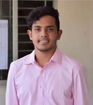

WAFID MUSABBIR KHANDAKER

Address: 15 Herdwick Cl, Kingsnorth, Ashford TN25 7FH
Email address: wafidmusabbir@gmail.com
Contact number: +4407915242113
Personal Statement
I am an undergraduate student of Business Information system, with 3 years of experience in social development and education
sector. I am a passionate and innovative team player with a keen attention to detail. I have hands on exposure in project
management with effective communication and time management skills gained through working with multiple organizations.
As an individual, I have always aspired to be a role model for others with a positive and committed attitude towards learning
new things. Taking on challenges provide me with motivation and heightens my determination to succeed. As someone who can take
lessons from most situations and believe in continuous learning and development and also my knowledge and experience will add
value to the business operation.
Education
-
BSc Honors in Business Information System, Canterbury Christ Church University, UK (2020-Present)
-
International A Levels -Accounting (B), Economics (B) and Mathematics (C) under Edexcel Pearson Examination Body,
UK (2019)
-
International GCSE -Accounting (A), Math(A), Economics (A), Chemistry(A*), Bangla(A), Physics(B) and English(C)
under Edexcel Pearson Examination Body, UK (2017)
Awards
-
Duke of Edinburgh Bronze Standard Award (2015)
-
National Youth Assembly Award (2018 & 2019)
Skills
-
Strong interpersonal and communication skill- while undertaking the role of Vice President of a civil society
organization, I was always connected to the real-world business where through communicating with different
stakeholders I developed and executed many projects for social development.
-
Effective management and problem solving skill- with having to manage different projects, I have developed the ability
of dealing with diverse groups and resolve issues that arise in business operation. My sound knowledge on business
subjects helped me to bring out the risky areas in projects and provide solutions to reduce risks and increase
effectiveness to add value to the organization.
-
Personal attributes such as accountability; adaptability to change; and the ability to self-manage- while studying at
high school and simultaneously working for a civil society organization, time has been of great value to me. I work
well under pressure, as part of a team and produce work of high productivity and efficiency. I have a high degree of
responsibility that I demonstrate daily which allowed me to do multitasking and timely reporting.
-
Ethical behavior and professionalism- my positive attitude and strong work ethics have been greatly appreciated by the
management of the organizations, which got reflected through the increased work opportunities each endeavor had created
for me allowing me to reach new milestones.
-
Information and Communication Technology Skills- Proficiency in Microsoft Word, Excel and PowerPoint has aided me to be
a more efficient and productive social development worker and teacher.
Work Experiences
Organisation: Volunteer For Bangladesh (JAAGO FOUNDATION), a civil society organisation, Bangladesh
Vice President from January 2018 to August 2020
Public Relation Officer from January 2017 to December 2017
-
Design and execute programs to empower, incubate and scale projects for social development
-
Prepare proposals along with budgets for projects and events
-
Prepare project wise financial reports and qualitative reports
-
Use different techniques to monitor, assess and evaluate project performance
-
Prepare and circulate public relation materials for social media as per the guidance of VBD National Board
Organisation: Anandaniketan, English Medium Institute, Bangladesh
Assistant Teacher Primary Level from August 2019 to March 2020
-
Prepare lesson plans, content, teaching methodologies and strategies for effective learning and development
-
Develop students’ English, - Mathematics and Science knowledge and skill
-
Implement strategies to achieve targets related to students’ learning outcomes
-
Provide opportunities to build up their self-esteem required to development
Freelancing: Private tutor from March 2018 to August 2020
- Teach Accounting and Economics to students of International GCSE level
- Teach high school students - Mathematics, English, Science, History, and Geography
Extra-curricular Activities and Interests
- Football
- Travel
- Volunteerism
- Social Entreprenuership
References
Fahmeena Nahas (Administrative Head Anandaniketan School and College)
Contact Number: +8801711922232
Email: leapie29@hotmail.com
Ahmed Shahriar (President Volunteer For Bangladesh Sylhet)
Contact Number: +8801753600573